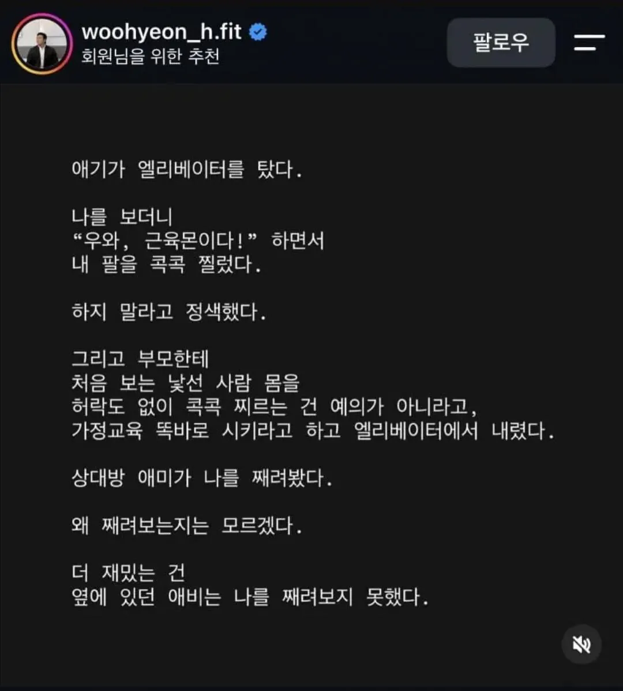
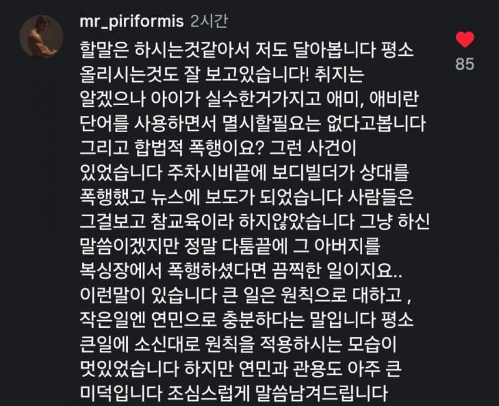
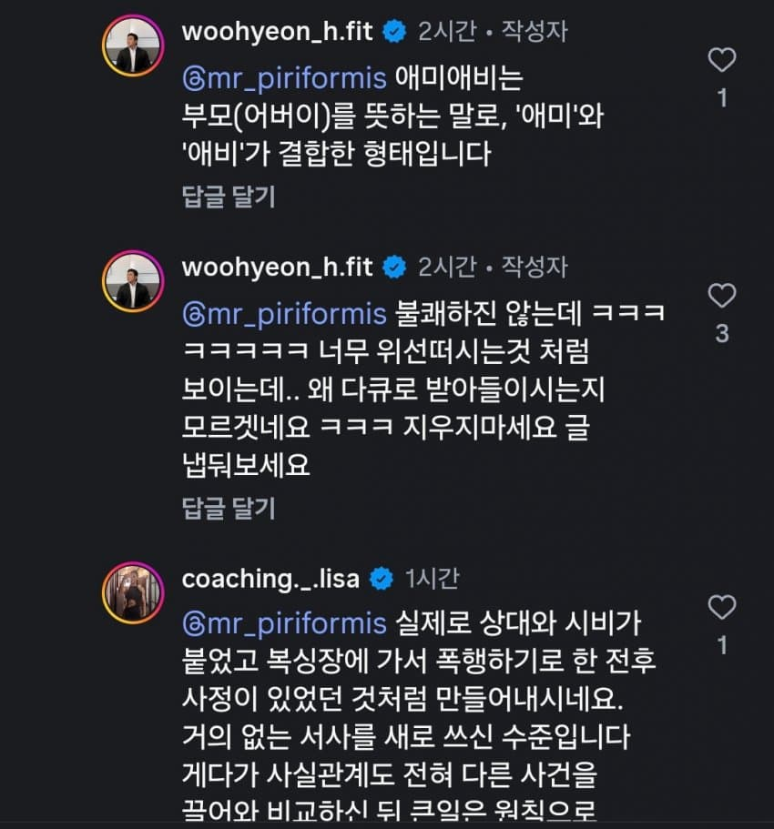
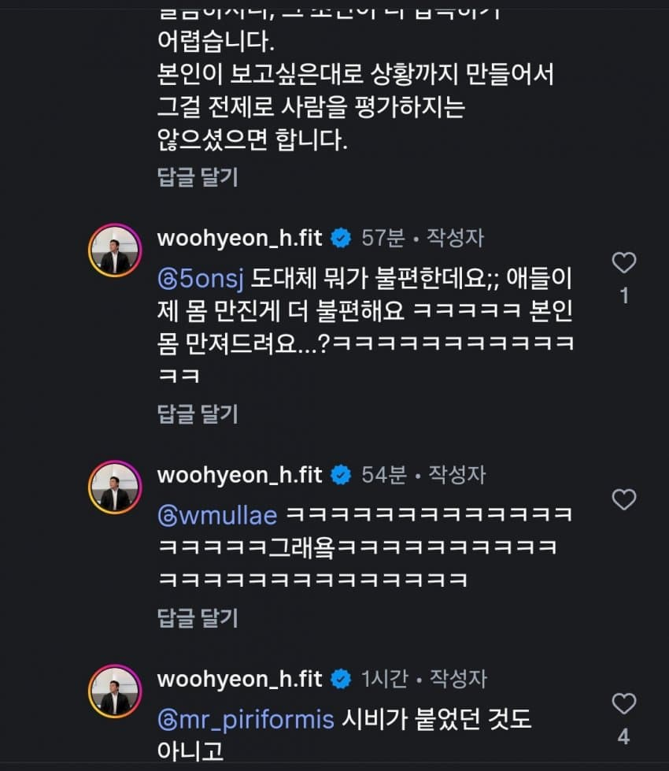
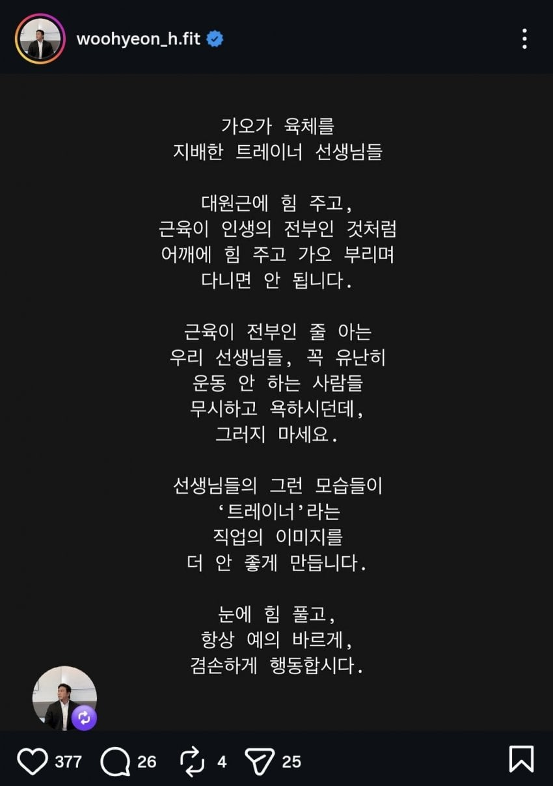
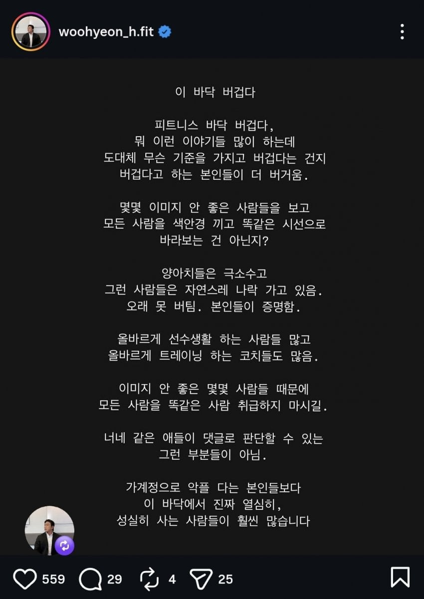
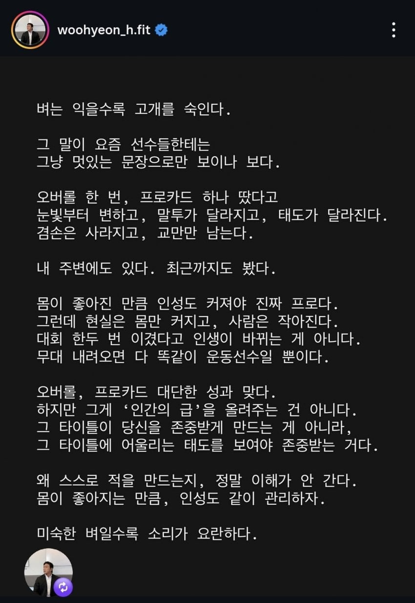
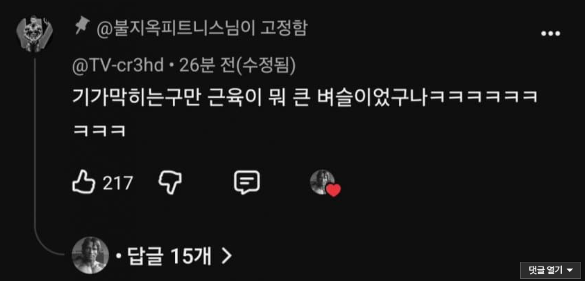

마지막 사족 때문에 불탔던 그 보디빌더
결론은



근육 멘헤라가 맞았다고 함
+ 평소에 인성 일침발언 자주 하고 다녔던 게 나옴



+ 뒤늦게 댓글창 닫았지만 근육 렉카들이 물어버렸음


마지막 사족 때문에 불탔던 그 보디빌더
결론은



근육 멘헤라가 맞았다고 함
+ 평소에 인성 일침발언 자주 하고 다녔던 게 나옴



+ 뒤늦게 댓글창 닫았지만 근육 렉카들이 물어버렸음

와 쟤 중학교 동창인대 점더 성공하면 나락보낼라했는대 지가 알아서 가버렸노 ㅋㅋㅋㅋ
??ㅋㅋㅋ원래 인성이 별로였음?
그냥 가진것도 없고 자존감도 박살난 상태라 몸만 키운 거였네
제정신 아닌 애들 많음
"그런 사람들은 자연스레 나락 가고 있음"
ㅋㅋㅋㅋㅋㅋㅋㅋㅋ
키가작아서 애가 쉽게 찔렀나보네ㅋㅋ
애 아빠 눈높이에는 안맞았을듯
쟤한테 느그애미애비 라고 써도 되는거지?
난 애가 뭐라해도 그냥 귀엽던데 마음이 좁나보네...
무식하네
ㅋㅋㅋㅋㅋㅋ복싱을 잘하려나..ㅋㅋㅋ